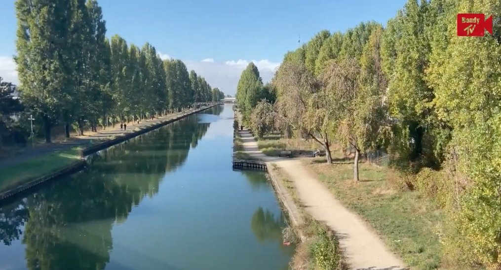
Une journée sur le terrain, au plus près des lieux où Bondy se retrouve.
Bondy ne se résume pas à une carte. C'est une ville qui se vit à pied, au rythme de ceux qui la traversent : on y croise des visages, on s'y salue, on s'y arrête un instant.
Derrière chaque rue, il y a des habitants qui la font vivre. Ceux qui l'ont toujours connue, ceux qui viennent d'arriver, ceux qui y travaillent, ceux qui y rêvent. Chacun a sa façon de la raconter, et chacune compte.
Un banc, une place, un bord d'eau, un commerce où l'on aime passer : ces lieux simples font le quotidien d'une ville. Ils créent des habitudes, des rencontres, parfois des amitiés.
Bondy TV vous invite à lever la tête et à regarder votre ville avec un regard neuf. Pas pour la juger : pour la montrer, avec ce qu'elle a de beau, de vivant et de surprenant.
Cette ville est la vôtre. Il y a un lieu que vous aimez, une scène que vous avez envie de partager ? Dites-le-nous : le prochain reportage sera peut-être le vôtre.
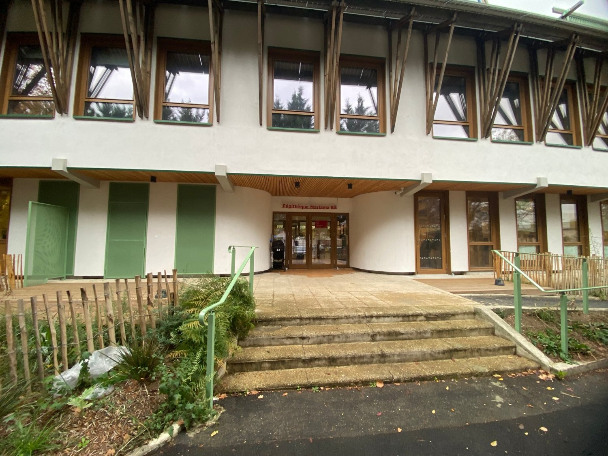
Inaugurée le 24 janvier 2026 dans le nord de Bondy, la Pépithèque réunit sous un même toit une bibliothèque et une pépinière d'entreprises. Un lieu rare, et un nom qui porte une histoire.
Une bibliothèque est déjà un trésor. Quand elle s'associe à une pépinière d'entreprises, elle devient un tremplin. C'est le pari de la Pépithèque Mariama Bâ, ouverte à Bondy, dans le quartier de la Noue Caillet.
Le rez-de-chaussée accueille une bibliothèque tournée vers la formation, l'emploi et la création d'activité, mais ouverte à tous : enfants, familles, jeunes, demandeurs d'emploi, habitants qui apprennent le français. Elle travaille avec les structures de la petite enfance, les écoles, la maison de quartier et la Maison France Services.
À côté des livres, la pépinière propose 17 bureaux, 6 postes de coworking et plusieurs salles de réunion. Les jeunes entreprises y bénéficient de locaux à coût modéré et d'un accompagnement renforcé, jusqu'à quatre ans. Des partenaires de l'emploi et de la création d'entreprise y tiennent aussi des permanences : Mission locale, PLIE, Agence locale d'insertion, ADIE, BGE Parif ou encore le Carrefour de l'entrepreneuriat.
Rencontres pour l'emploi, mini-forums, ateliers CV, découverte des métiers : le lieu rassemble la lecture, la formation, la recherche d'emploi et le développement de projets. De quoi passer, en quelques mètres, d'une idée à sa réalisation.
L'ancien site de la MGEN, racheté en 2019 par Est Ensemble, a été réhabilité plutôt que démoli, pour limiter l'empreinte carbone. Conception bioclimatique, récupération des eaux de pluie, panneaux photovoltaïques, structure en bois, isolation en fibres de bois, arbres existants préservés : le chantier a fait le choix du durable. L'investissement total s'élève à 11,7 millions d'euros hors taxes.
Le samedi 24 janvier 2026, de 10 h à 18 h, la Ville de Bondy et Est Ensemble ont ouvert grand les portes : concerts, spectacles, ateliers, lectures, jeux vidéo, goûter et visites guidées, le tout gratuit et ouvert à tous.
Le nom rend hommage à une grande voix de la littérature africaine. Née à Dakar le 17 avril 1929 et disparue le 17 août 1981, Mariama Bâ était une écrivaine sénégalaise, institutrice puis inspectrice de l'enseignement, mère de neuf enfants. Son premier roman, Une si longue lettre (1979), est une lettre d'une veuve à son amie : un texte devenu un classique, traduit en plus de 30 langues, qui dénonce avec finesse les injustices faites aux femmes dans la société sénégalaise de son époque et aborde le thème de l'émancipation féminine. Il lui vaut en 1980 le prix Noma de l'édition africaine. Elle s'est battue pour l'accès au savoir et l'émancipation, deux idées qui résonnent dans une bibliothèque de quartier.
Adresse : 28 avenue Henri Varagnat, 93140 Bondy.
Horaires de la bibliothèque - Lundi : fermée au public - Mardi : 14 h – 18 h - Mercredi : 10 h – 13 h et 14 h 30 – 19 h - Jeudi : fermée au public - Vendredi : 14 h – 18 h - Samedi : 10 h – 13 h et 14 h 30 – 18 h - Dimanche : fermée
Bibliothèque : 01 79 64 52 66 · bondy.bibliotheques-estensemble.fr Pépinière d'entreprises : 01 41 72 91 00 · pepinieres-entreprises.est-ensemble.fr
Sources : Est Ensemble, affichage de la Pépithèque, Ville de Bondy.
Il traverse Bondy, il a plus de 200 ans, et on peut le longer à pied ou à vélo.
Le canal de l'Ourcq traverse Bondy. Beaucoup d'entre nous le longent sans connaître son histoire.
Tout commence en 1802. Une loi décide d'amener les eaux de l'Ourcq jusqu'à Paris, et les travaux démarrent le 23 septembre de cette année-là. Le but : fournir de l'eau à la capitale. Les bateaux commencent à y naviguer en 1822.
Aujourd'hui, le canal mesure 108 kilomètres : c'est le plus long canal parisien. Il n'a plus le même rôle : on y vient pour se promener. Ses berges sont devenues un chemin de promenade, et un itinéraire à vélo, la Scandibérique, passe par Bondy.
Prenez un après-midi, marchez le long de l'eau, et dites-nous ce que vous y avez vu.
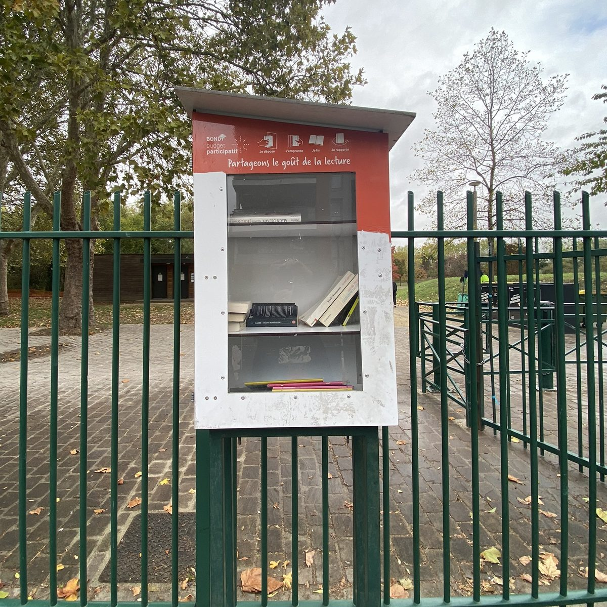
« Partageons le goût de la lecture » : on prend un livre, on en dépose un autre. C'est gratuit, pour tout le monde.
« Partageons le goût de la lecture » : c'est écrit sur cette petite boîte rouge, posée à l'entrée du Bois de Bondy. Le principe est simple : on prend un livre, on en dépose un autre. C'est gratuit, ouvert à tous et accessible à toute heure.
Bondy TV aimerait en voir partout dans la ville, à chaque coin de rue : un livre à portée de main, c'est un pas de plus vers le savoir pour chacun.
Et vous ? Une idée d'endroit pour la prochaine boîte à livres ? Écrivez-nous.
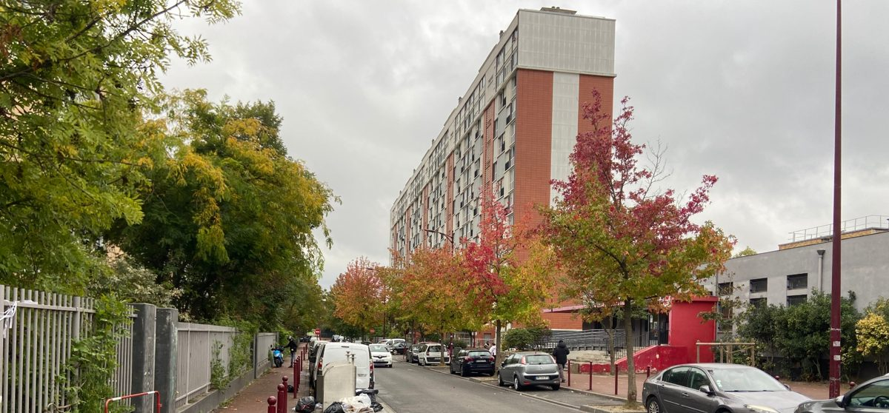
Citée dès le VIIe siècle, Bondy cache beaucoup de choses.
Bondy est l'une des plus anciennes localités de Seine-Saint-Denis. Son nom apparaît dans des textes dès le VIIe siècle.
Aujourd'hui, Bondy compte environ 50 600 habitants.
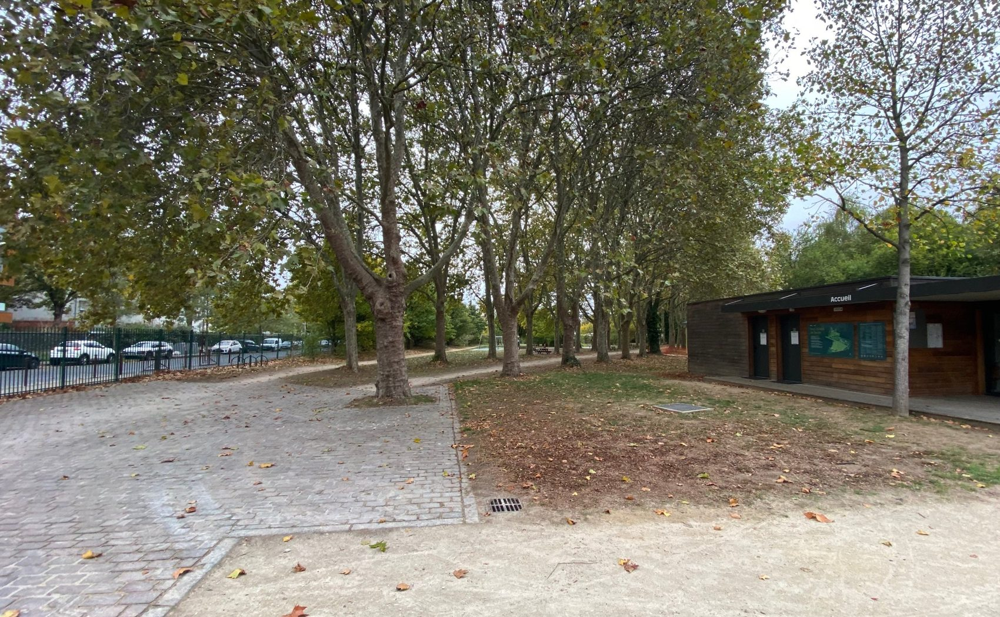
Un écrivain, un rappeur, deux footballeurs. Des Bondynois qui portent notre ville loin.
Bondy a vu passer des personnes qui sont devenues connues partout. Voici quatre noms qui font notre fierté.
Kylian Mbappé. Il a commencé le football en 2004, dans l'équipe de jeunes de l'AS Bondy. C'est là que son parcours démarre.
William Saliba. Il est né à Bondy en 2001. À six ans, il joue déjà à l'AS Bondy, où il est entraîné par le père de Kylian Mbappé. Il joue aujourd'hui à Arsenal et en équipe de France.
Tiakola. Le chanteur et rappeur est né à Bondy en 1999. Il a ensuite grandi à La Courneuve. En 2022, son premier album Mélo est arrivé n°1 en France.
André Malraux. L'écrivain, devenu ministre de la Culture, est né à Paris en 1901. Enfant, il a été élevé par sa mère, sa grand-mère et une tante qui tenait une épicerie rue de la Gare, à Bondy.
Vous connaissez quelqu'un de Bondy qui mérite d'être raconté ? Écrivez-nous : le prochain portrait sera peut-être le sien.
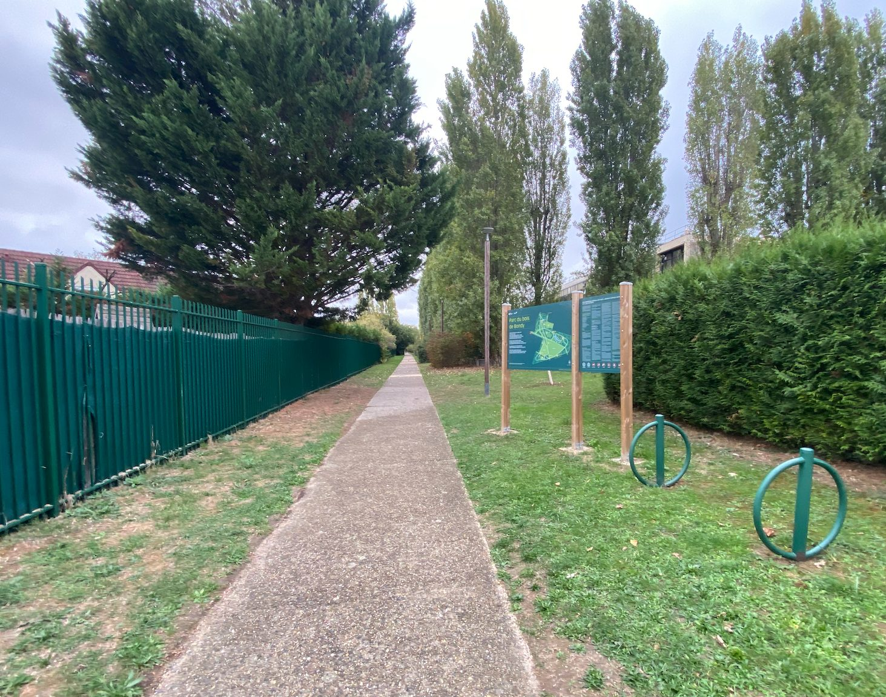
Il n'y a aucune honte à demander de l'aide. À Bondy, des équipes sont là pour ça, tout près de chez vous.
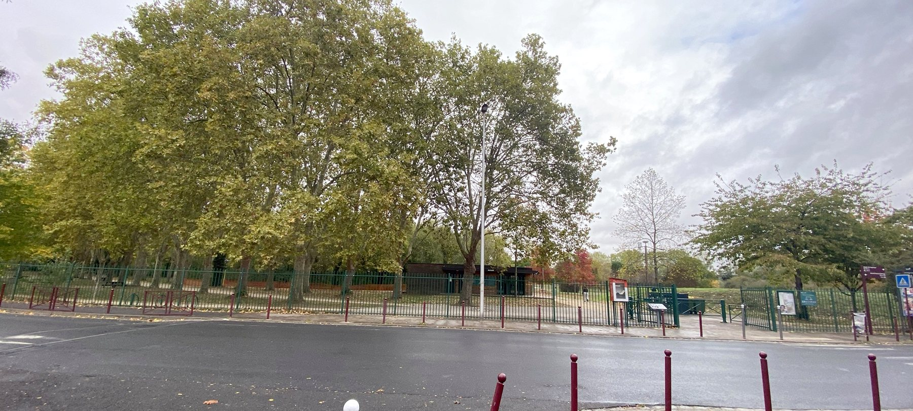
Vous connaissez votre ville mieux que personne. Vous avez une idée pour la rendre plus belle, plus vivante, plus agréable ? Ce magazine est à vous.
Une ville, ce sont ses habitants qui la connaissent le mieux. Vous y vivez, vous y passez chaque jour, vous voyez ce qui marche et ce qui pourrait être encore mieux. Et si votre idée pouvait inspirer toute une ville ?
Une animation pour le quartier, un coin à embellir, un service utile, une initiative pour les jeunes ou pour les aînés. Petite ou grande, une bonne idée mérite d'être entendue.
Écrivez-nous, ou envoyez-nous une courte vidéo. Racontez votre idée avec vos mots : ce que vous imaginez, et pourquoi cela ferait du bien à Bondy.
Les meilleures idées sont publiées dans le magazine, avec votre nom si vous le souhaitez. Une idée partagée, c'est une ville qui avance.
Bondy TV est là pour donner de la visibilité à celles et ceux qui ont quelque chose à dire. Prenez la parole : votre idée est peut-être la prochaine.
Je partage mon idée
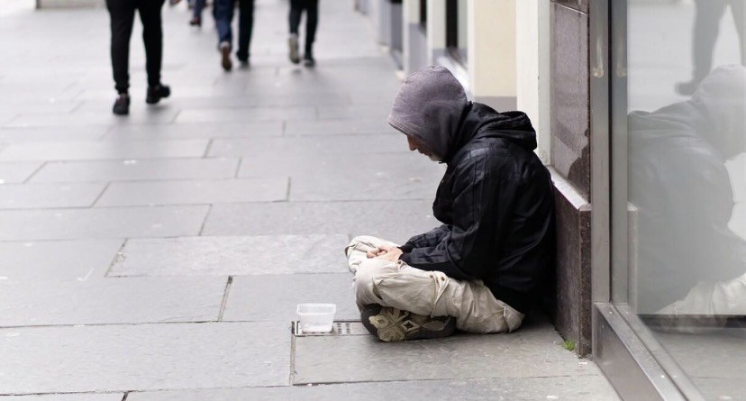
Emploi, logement, jeunesse, discriminations : derrière chaque difficulté, il y a un voisin. Que peut-on faire, concrètement ?
Un père de famille qui envoie des CV depuis des mois et n'a plus de réponse. Un jeune sans diplôme qui se dit que « de toute façon, ça ne sert à rien ». Une mère qui cache ses factures dans un tiroir en espérant que ça passe. Une personne que l'on n'appelle jamais pour un entretien, sans qu'elle sache pourquoi.
Ce ne sont pas des cas à part. Ce sont des voisins. Et le plus dur, souvent, n'est pas le manque d'argent : c'est le silence, la honte, le sentiment d'être de trop.
Retrouver du travail, c'est retrouver sa place à table, son regard dans le miroir, sa fierté devant ses enfants. Il y a des pistes simples, qui n'attendent que d'être poussées plus loin :
Pour les 16-25 ans, les missions locales sont faites pour ça : elles accompagnent les jeunes dans leurs démarches et leurs projets. Encore faut-il qu'ils sachent qu'elles existent, et qu'ils osent pousser la porte.
Un loyer en retard, puis deux. Une lettre que l'on n'ose plus ouvrir. On ne tombe pas du jour au lendemain : on glisse, souvent seul. C'est là qu'il faut tendre la main, pas quand la situation est devenue urgente.
Le CCAS, le centre communal d'action sociale, est la porte d'entrée pour faire le point et être orienté vers les aides existantes. Ses horaires et son adresse sont ici : Quand le mois est long.
Ce que l'on peut demander : mieux faire connaître les aides, accompagner les familles en impayés, prévenir les expulsions, aider ceux qui n'arrivent plus à remplir seuls leurs papiers.
Un jeune a besoin d'un travail, bien sûr. Mais aussi d'un adulte qui croit en lui, d'un endroit où s'exprimer, d'une activité qui lui donne envie de se lever le matin. Parrainage, découverte des métiers, soutien scolaire, sport, culture : les idées existent. La question est de savoir si ceux qui en ont besoin les connaissent.
Être écarté d'un emploi, d'un logement ou d'une activité à cause de son origine, de son nom ou de son adresse, ça laisse des traces. Chacun doit connaître ses droits, savoir où signaler, et ne pas rester seul. Les points d'accès aux droits et les permanences juridiques sont là pour ça : renseignez-vous auprès de la mairie.
Aux élus : quelles sont vos priorités contre l'exclusion ? Quels moyens pour les habitants les plus fragiles ? Comment mesurez-vous les résultats ?
Aux associations : quels sont les besoins les plus urgents que vous voyez sur le terrain ? Avez-vous assez de moyens pour aider ?
Aux habitants : les personnes en difficulté sont-elles assez accompagnées à Bondy ? Que voyez-vous dans votre quartier ? Quelle solution aimeriez-vous voir demain ?
À vous la parole. Votre histoire, votre idée, votre coup de gueule : Écrivez-nous. Anonymement si vous préférez. Nous publions vos réponses, et nous transmettrons vos questions.
À Bondy, de plus en plus de commerçants et de créateurs vendent aussi en ligne. Ce numéro commence à les présenter.
Vendre à Bondy, c'est une chose. Vendre depuis Bondy à toute la France, voire plus loin, en est une autre. De plus en plus de Bondynois se lancent : boutiques en ligne, créateurs, commerçants qui complètent leur magasin par un site.
Derrière chaque boutique en ligne, il y a une histoire : une passion, un savoir-faire, l'envie de faire connaître ce que l'on fait bien. Beaucoup commencent petit, depuis chez eux, entre deux journées de travail.
Vendre en ligne ne coupe pas du quartier, au contraire. Ces entrepreneurs gardent Bondy dans leur nom, dans leur histoire, dans leur fierté. Et quand ils réussissent, c'est un peu toute la ville qui réussit avec eux.
Se lancer demande du courage, et se faire connaître demande de la visibilité. Bondy TV est là pour ça : donner un coup de projecteur à celles et ceux qui osent.
Vous avez une boutique en ligne, ou vous en préparez une ? Présentez-vous : racontez ce que vous faites, pour qui, et pourquoi. Votre projet sera peut-être dans le prochain numéro.
Je veux présenter mon projet
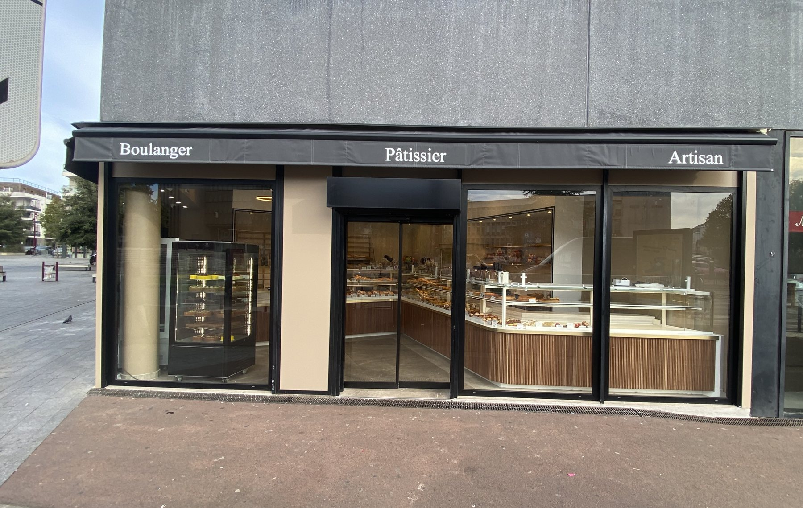
Au cœur de Bondy, face à la mairie, une adresse familière s'est refait une beauté sans rien perdre de son âme.
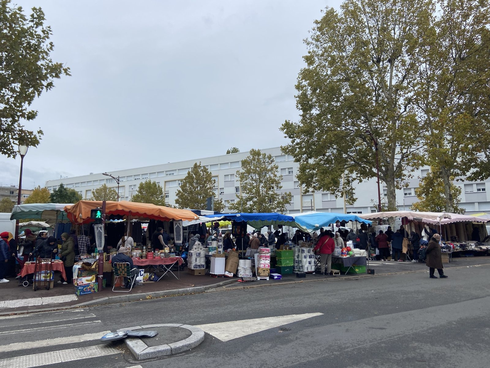
Trois marchés, cinq jours par semaine : mardi, mercredi, jeudi, samedi et dimanche.
Marché Suzanne Buisson : dans le nord de la ville, les mardis, jeudis et samedis, de 8h à 13h.
Marché du centre-ville : place du 11 novembre, les dimanches, de 8h à 13h. Le parking souterrain de l'Hôtel de Ville est ouvert aux véhicules.
Marché de la Gare : place de la République, les mercredis et samedis, de 8h à 13h.
Et aussi, des rendez-vous spéciaux. En décembre 2024, la ville a organisé la première édition d'un marché des producteurs place du 11 Novembre 1918, à l'initiative de la SEMACO, avec des producteurs et artisans locaux et régionaux, des animations et des dégustations.
Vous avez votre étal préféré ? Dites-nous lequel, et pourquoi : Écrivez-nous. Il pourrait avoir son portrait dans le prochain numéro.
À Bondy, une nouvelle table vient de s'ouvrir. Derrière elle, un homme que tout le monde connaît et qui a décidé de tenir sa promesse : faire bien, et faire propre.
Il y a des adresses qui font du bruit avant même d'avoir ouvert. Maison Atlas a fait l'inverse : elle est arrivée à Bondy discrètement, et ce sont les assiettes qui ont parlé.
Le nom dit déjà beaucoup. L'Atlas, c'est la montagne qui veille sur le Maroc, et c'est aussi, pour des milliers de familles d'ici, le goût de la maison, celui des matins de week-end et des tables où l'on s'assoit toujours à plus qu'il n'y a de chaises. C'est cette mémoire-là que Toufik a voulu mettre en cuisine.
Beaucoup de Bondynois le connaissent. C'est un homme du quartier, de ceux qui répondent présent quand on a besoin d'un coup de main, sans qu'on ait à le demander deux fois. Il avait l'envie, têtue et sincère, de s'en sortir par le travail. Maison Atlas est sa réponse : un lieu à lui, ouvert à tous, où l'on est reçu comme chez soi.
Le petit déjeuner oriental est le plat de résistance de la maison. Thé à la menthe ou café au lait, jus d'orange, tartines de miel ou de Nutella, œufs, olives noires, huile d'olive, pain oriental, toast avocat-saumon : quatre formules, de 6,50 € à 9,50 €, pensées pour que personne ne reparte sur sa faim. À la carte, les classiques du fournil, msemen, harcha, mhajeb, côtoient le jus d'avocat aux amandes et aux dattes, et les soupes à 4 €, lentilles ou bissara, servies tous les jours.
Le vendredi, la maison change de rythme. C'est le jour de la Couscous Party, de 11h30 à 15h : couscous à l'agneau ou au poulet, copieux, parfumé, comme on l'espère et comme on le trouve rarement. Un goût unique, singulier, qui rassasie vraiment.
Sur TikTok, les avis s'accumulent, et ils sont très, très bons. Des Bondynois qui sont venus, ont goûté et ont tenu à le dire : la cuisine, l'accueil, la générosité des assiettes. Le bouche-à-oreille a fait le reste, et c'est le meilleur des signes.
On n'en parle pas assez, mais c'est ce qu'on remarque en premier : ici, tout est net, soigné, accueillant. Dans une ville qui se raconte trop souvent par ses difficultés, voir un commerce de quartier monté avec autant de sérieux est une bonne nouvelle. Mettre en valeur ceux qui le méritent : c'est le but de Bondy TV. Et Maison Atlas en fait partie.
Alors, un matin ou un vendredi, passez la porte. Goûtez. Et dites-nous ce que vous en avez pensé.
Maison Atlas, 9 rond-point du Verger, 93140 Bondy. Tous les jours de 5h à 13h en service continu, et le vendredi jusqu'à 15h. Réservations et groupes : 06 52 83 52 45 (WhatsApp).
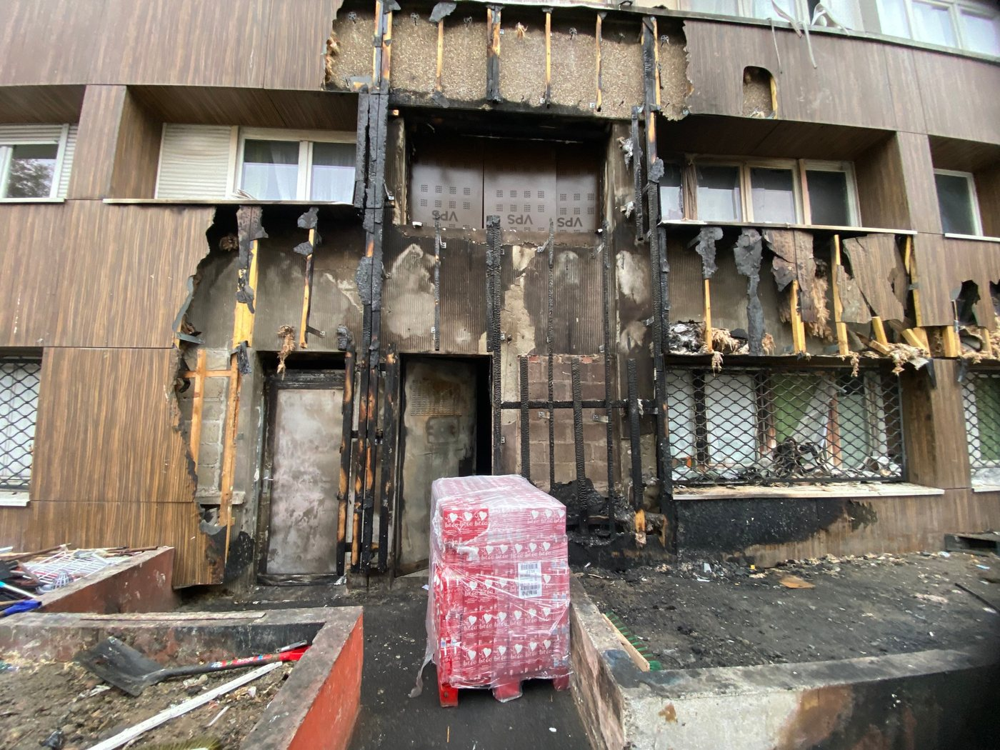
On peut incendier un local. On ne brûle pas une conviction. Madame Hassiba en fait, chaque jour, la démonstration.
Dans une ville, il y a ceux qui font du bruit et ceux qui font du bien. Les premiers occupent les écrans. Les seconds tiennent la ville debout. Madame Hassiba appartient à la seconde famille, celle qu'on ne remercie presque jamais, parce qu'elle travaille là où personne ne regarde.
Elle a fondé Action 14 pour répondre à une question que Bondy se pose en silence : que fait-on quand le frigo est vide ? Sa réponse tient en un geste, répété sans relâche. Elle va chercher les donateurs, rassemble ce qui peut être donné, et fait parvenir de quoi manger à celles et ceux qui en ont besoin. Pas de grand discours, pas de caméra : de l'organisation, de la parole donnée, et un cœur qui ne compte pas ses heures. Des familles qui peinent à joindre les deux bouts savent qu'une porte, à Bondy, ne leur sera pas fermée.
Il y a quelque temps, cette porte a pris feu. Le local d'Action 14, ce lieu où des Bondynois trouvaient à manger, a été brûlé. Madame Hassiba nous l'a dit elle-même, sans détour : l'incendie est volontaire. Elle a déposé plainte au commissariat, et la police fera son travail.
Bondy TV n'accuse personne. Ce n'est pas notre rôle, et ce ne serait pas juste. Mais nous refusons de détourner les yeux. Brûler le local d'une association qui nourrit les familles, c'est s'attaquer à ceux qui n'ont rien demandé et qui donnent tout. Cela ne dit rien de Bondy. Cela dit tout de ce que Bondy ne doit jamais tolérer.
Regardez les photos. Les murs sont noircis, le revêtement arraché, les barreaux calcinés. Et pourtant, devant le local, des palettes de denrées sont rangées, prêtes à partir. Voilà la vraie réponse : pas une déclaration, pas une polémique, des cartons qui continuent à circuler. Madame Hassiba n'a pas fermé. Elle poursuit son chemin, parce que la faim n'attend pas que les enquêtes soient terminées.
Il y a des gens qu'on mesure à ce qu'ils disent. Elle se mesure à ce qu'elle fait.
On parle souvent de « la ville » comme d'une abstraction : des institutions, des chiffres, des promesses. Une ville, pourtant, c'est ce que des personnes décident d'en faire chaque matin. Madame Hassiba a décidé d'en faire un endroit où l'on ne laisse personne seul. Voilà ce qu'est un acteur de Bondy.
Bondy TV existe pour mettre en valeur ceux qui le méritent. Madame Hassiba et son équipe le méritent. Si vous voulez les aider, donner, ou simplement leur dire que vous êtes avec eux :
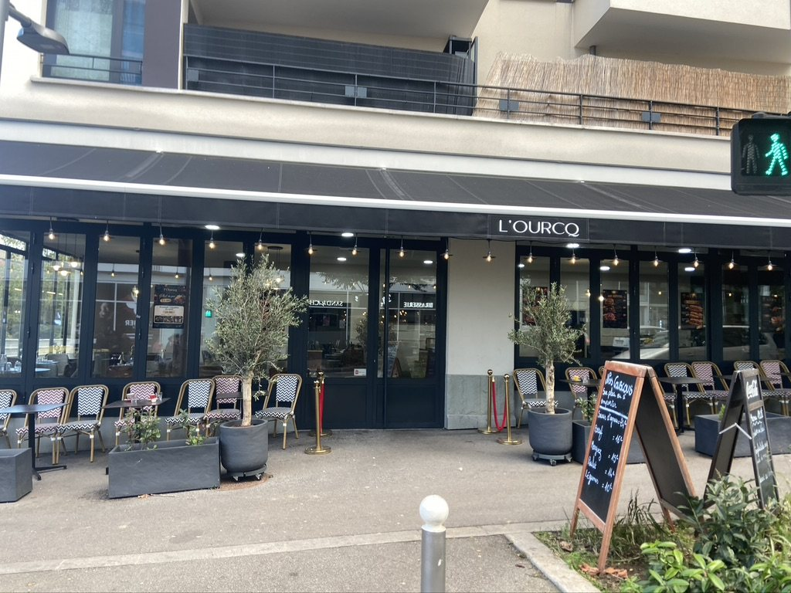
À Bondy, sur la route d’Aulnay, L’OURCQ attire le regard avec sa façade élégante, sa terrasse accueillante et son ambiance de brasserie contemporaine. Une adresse à découvrir au cœur de la vie locale.
Sur la route d’Aulnay, à Bondy, la brasserie L’OURCQ se distingue par une devanture soignée et une terrasse aménagée avec goût. Mobilier élégant, plantes décoratives, grandes baies vitrées et espace extérieur : tout contribue à donner à l’établissement une identité visuelle moderne et accueillante.
Dès le premier regard, le lieu invite à faire une pause, à se retrouver autour d’un verre ou à partager un moment convivial.
La brasserie occupe une place particulière dans la vie d’un quartier. On y vient pour déjeuner, prendre un café, retrouver des amis ou simplement profiter d’un moment de détente.
Avec son cadre contemporain et sa terrasse ouverte sur la rue, L’OURCQ possède les atouts d’une adresse qui peut devenir un véritable point de rendez-vous pour les habitants et les personnes de passage.
Au-delà de son activité commerciale, ce type d’établissement participe à l’animation des rues et contribue à faire vivre les commerces de proximité.
À travers ses commerces, ses cafés et ses brasseries, Bondy révèle aussi le dynamisme de son territoire. Mettre en lumière ces établissements, c’est valoriser les initiatives locales, les lieux de vie et les espaces où se croisent les habitants.
Avec ce reportage photo, Bondy TV met à l’honneur L’OURCQ, une brasserie dont la présentation soignée mérite un coup de projecteur.
Située au 32, route d’Aulnay, 93140 Bondy, L’OURCQ s’inscrit dans le paysage commercial de la ville.
Bondy TV poursuivra la découverte des commerces et des lieux qui contribuent à l’identité et à la vitalité de Bondy.
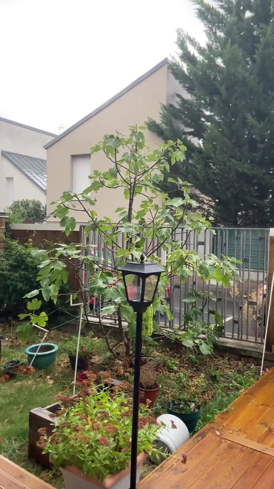
Les gens bien existent. La vraie question : que change chacun de nos choix ?
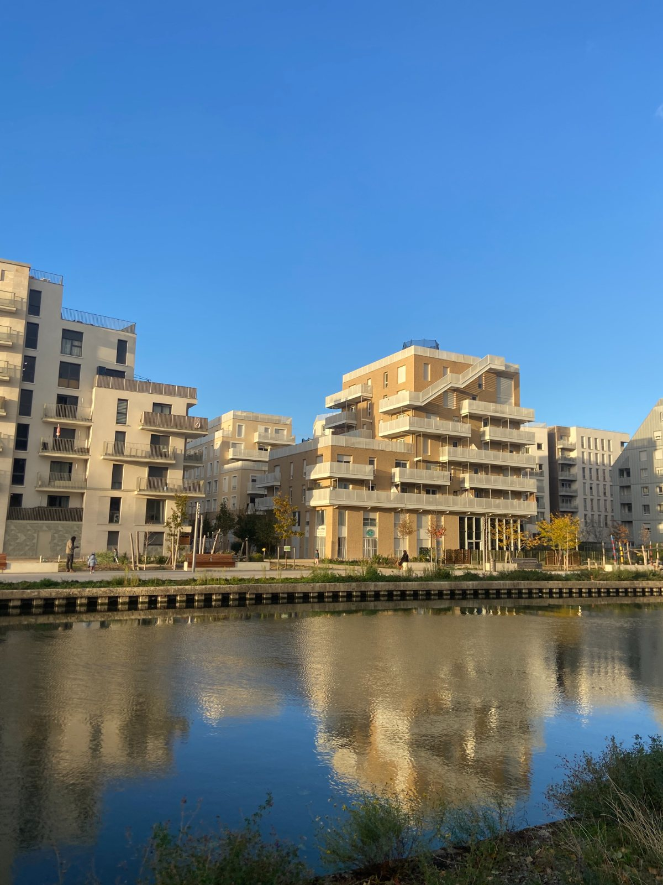
Bondy TV existe depuis 2018. Aujourd'hui, c'est enfin un média complet, pensé pour être utile aux Bondynois.
Combien de fois avez-vous eu quelque chose à dire sur votre ville, sans savoir où le dire ? Les choses vont enfin être plus simples.
Bondy TV a été créé en 2018 par un citoyen de Bondy. Il fallait du temps pour bien faire les choses. Nous avons travaillé le concept pour qu'il soit solide et qu'il serve vraiment aux Bondynois. Aujourd'hui, c'est un média complet :
Le podcast met Bondy en valeur. Chaque invité vient en parler avec ses mots, et la ville est racontée par celles et ceux qui la connaissent, comme elle l'a rarement été.
Un seul projet, et tout est au même endroit. Ce n'est pas un petit travail : c'est du sérieux, fait pour que les Bondynois en profitent et que cela leur soit bénéfique.
Ici, vous n'attendez pas qu'on parle de vous : vous parlez.
Que vous fassiez la ville, que vous l'habitiez ou que vous la découvriez, ce média est à vous. Bondy, telle qu'elle est, avec ses talents et ses visages.
Pour ne rien manquer, suivez Bondy TV sur Facebook, TikTok, Instagram et YouTube.
Et ce n'est qu'un début : d'autres projets suivront très bientôt.
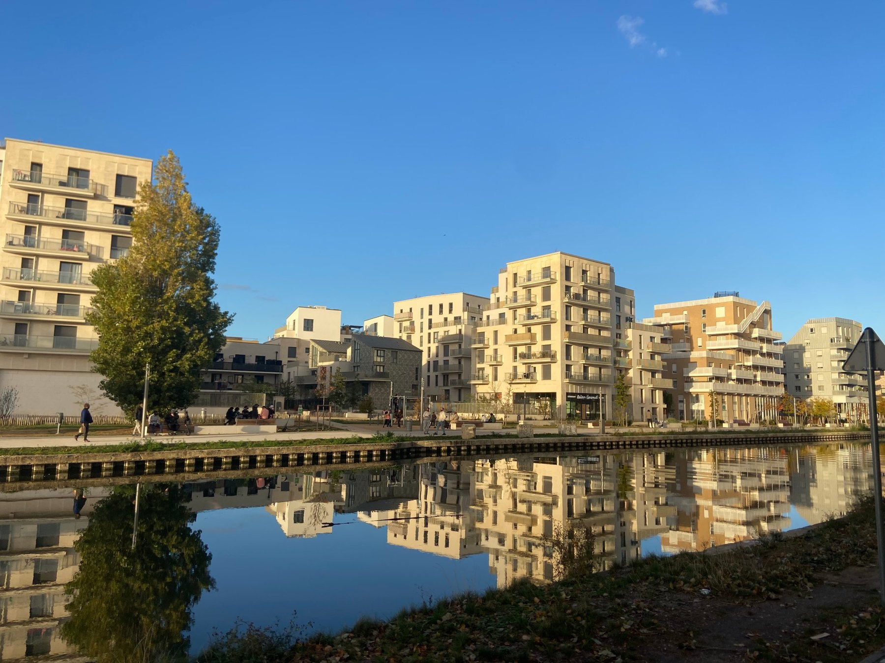
Bondy a plusieurs visages. Entre le nord et le sud, une fracture existe, et la ville cherche à recréer du lien.
Le nouveau visage de Bondy est multiple. Il est aussi divisé : entre le nord et le sud de la ville, les habitants ne vivent pas toujours les mêmes réalités, et une fracture s'est installée.
Les responsables de la ville affirment travailler à réparer cette fracture et à recréer du lien entre les habitants. Reste à voir, ensemble, ce que cela change au quotidien.
Et vous, comment voyez-vous le nouveau visage de Bondy ? Racontez-nous votre histoire en quelques lignes : ce que vous vivez, ce que vous voyez, ce que vous espérez. Utilisez le formulaire, écrivez-nous à tvbondy@gmail.com ou sur www.bondytv.com. Votre témoignage pourra paraître dans le prochain numéro.
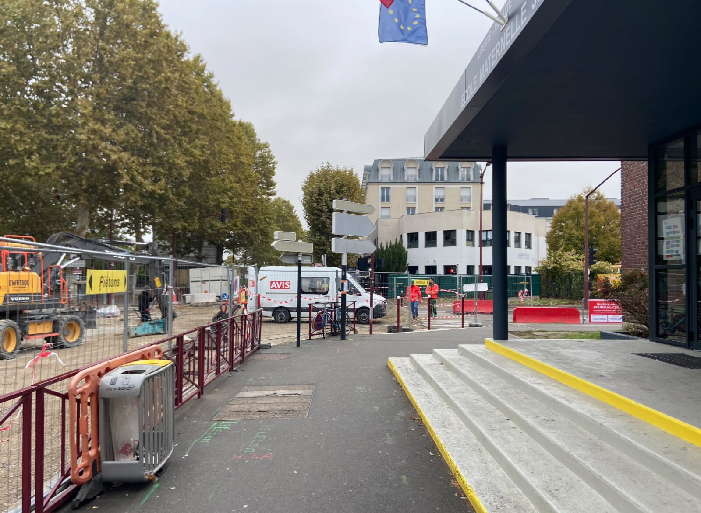
Une route est bloquée à Bondy Nord, à côté de l'école. D'après la Ville, une canalisation d'eau potable a explosé cet été. Réouverture annoncée : le 30 octobre.
Pour les parents, les enfants et les riverains, le quotidien est devenu compliqué : le secteur est bouché, et la patience s'use.
Selon la Ville de Bondy, la route est impraticable à cause de la rupture d'une canalisation d'eau potable. Cet été, elle a explosé et créé d'importantes cavités sous la chaussée et les trottoirs.
Les travaux concernent le carrefour route d'Aulnay / avenue Henri Varagnat, et le carrefour avenue Jean Moulin / avenue Max Dormoy.
Le Département de la Seine-Saint-Denis annonce une réouverture à la circulation le 30 octobre 2026 pour le carrefour avenue Jean Moulin / route d'Aulnay. Des complications techniques et des manifestations ont retardé le chantier. Aucune date n'est donnée pour l'autre carrefour.
Des panneaux de déviation sont installés aux extrémités des rues voisines. La circulation et le stationnement sont interdits au cœur de la zone. Les piétons peuvent continuer à passer sur les trottoirs.
Source : Site officiel de la ville de Bondy.
Vous habitez le quartier ? Racontez-nous comment vous vivez ces travaux, avec le formulaire Témoigner.
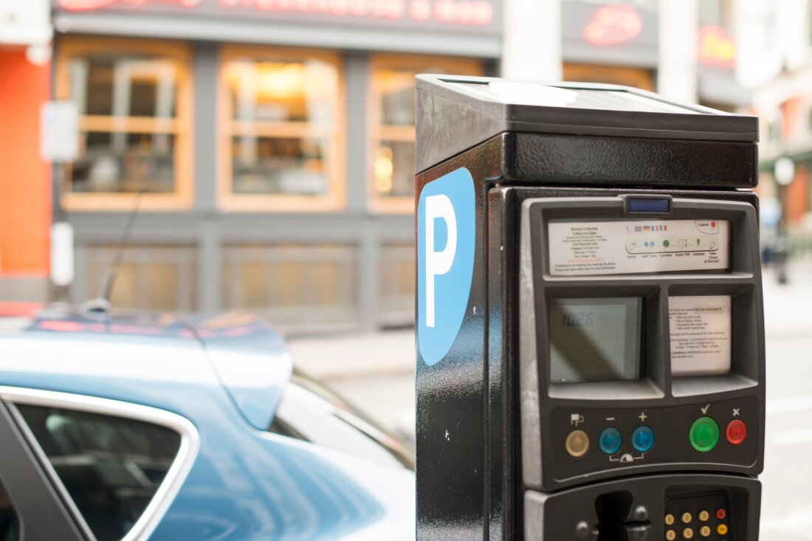
Au marché, dans la rue, une même colère revient dans la bouche des Bondynois : se garer coûte de plus en plus cher.
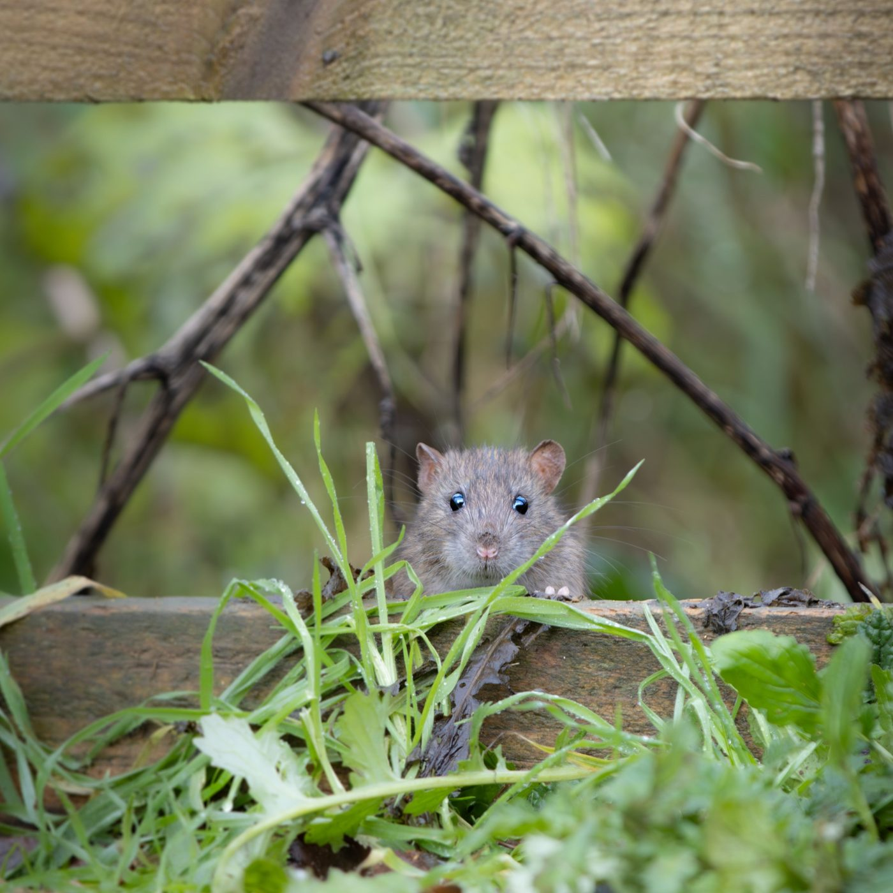
Propreté, hygiène, santé : les Bondynois attendent des réponses.
Dans les rues, près des poubelles, dans les espaces verts, aux abords des immeubles : quand des rats apparaissent, ce n’est pas qu’une affaire d’image. C’est l’hygiène, la tranquillité et la santé de tous.
Sur ville-bondy.fr, la mairie rappelle que quatre campagnes de dératisation sont obligatoires chaque année. Celle de 2025 a démarré le 21 juillet : bâtiments municipaux, squares, parcs, écoles, crèches. Propriétaires, bailleurs, syndics et locataires doivent aussi y participer.
Est-ce suffisant dans les quartiers concernés ? Les habitants savent-ils où signaler un rat, et ce qui est fait ensuite ? Il ne s’agit pas d’accuser, mais de demander de la transparence et des résultats.
📍 Dans quel quartier ?
📸 Envoyez vos photos et vos témoignages à Bondy TV, depuis Écrivez-nous.
Pour signaler un problème : service d’hygiène de la mairie, 01 48 50 54 87.
Bondy mérite des rues propres et des réponses concrètes.
Les clubs et les sportifs de Bondy : résultats, portraits, événements.
Vos droits et démarches : services de la mairie, numéros utiles, à qui s'adresser.
Exemple : vos plus belles photos de Bondy paraîtront ici. Envoyez-les à tvbondy@gmail.com
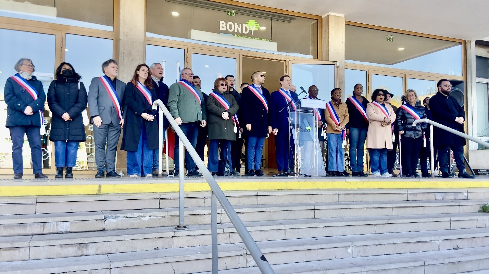
Une photo, une date, quelques lignes : l'instant qui a marqué Bondy.
Commerçants, associations : contactez-nous à tvbondy@gmail.com
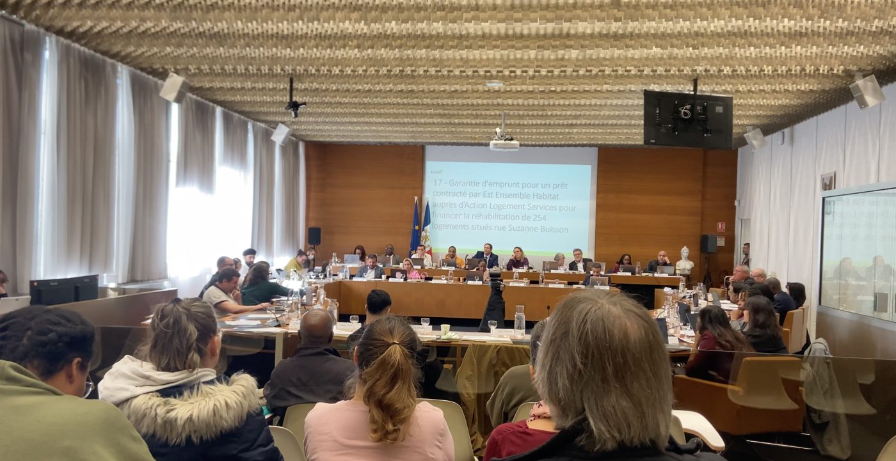
Les décisions de la ville touchent le quotidien de chaque Bondynois. Bondy TV les explique simplement.
La politique locale, ce n'est pas réservé aux spécialistes. Une rue refaite, une école rénovée, un logement, un équipement : les décisions prises à Bondy se voient dans la vie de tous les jours.
Au conseil municipal, les élus discutent et votent des décisions qui concernent toute la ville. Bondy TV les explique avec des mots simples, pour que chacun puisse comprendre.
Majorité ou opposition, chaque sensibilité peut s'exprimer. Nous posons les mêmes questions à tous, et nous publions les réponses.
Une décision vous intéresse, une question vous préoccupe ? Écrivez-nous : elle sera peut-être traitée dans le prochain numéro.
Poser ma question
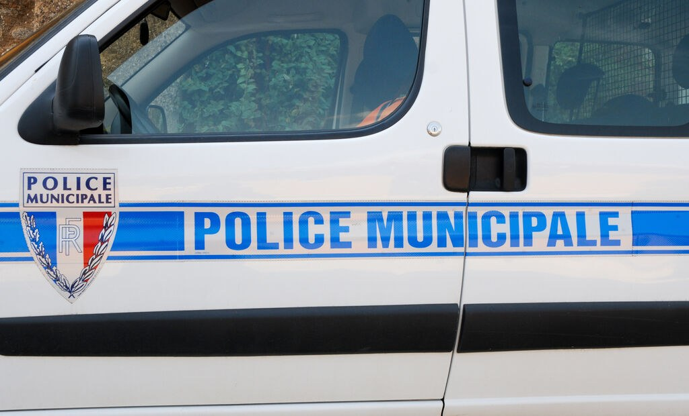
À Bondy, l'ancienne gendarmerie rappelle que les bâtiments publics ont une histoire, mais surtout une mission : être au service des habitants. Aujourd'hui, ce bâtiment accueille la police municipale. Une question mérite pourtant d'être posée : les habitants voient-ils réellement les résultats de son action au quotidien ?
La police municipale a pourtant un rôle essentiel dans une ville. Elle contribue au respect des arrêtés municipaux, à la tranquillité publique, à la prévention des incivilités, à la sécurité aux abords des écoles, à la surveillance de l'espace public et à la lutte contre les stationnements gênants. Elle doit être présente sur le terrain, à l'écoute des riverains et capable d'intervenir dans le cadre de ses compétences.
Mais entre les missions inscrites sur le papier et la réalité vécue par les habitants, il peut exister un fossé.
Lorsqu'un habitant constate des incivilités répétées, des problèmes de stationnement, des nuisances ou un manque de présence dans certains quartiers, il est légitime qu'il s'interroge sur l'efficacité du service public chargé de contribuer à la tranquillité de la ville.
La police municipale ne doit pas être une simple présence en uniforme. Elle doit être une présence utile.
Les habitants n'attendent pas des agents qui se contentent de circuler, de rester entre collègues ou de donner l'impression d'une autorité sans résultats visibles. Ils attendent des professionnels accessibles, actifs, respectueux et capables d'apporter des réponses concrètes aux problèmes du quotidien.
L'image du « cow-boy » en uniforme, qui impressionne davantage qu'il ne résout les problèmes, ne devrait jamais devenir celle d'un service public. L'autorité ne se mesure ni à l'uniforme ni au ton employé, mais à la qualité du travail accompli, au respect des citoyens et à l'efficacité des interventions.
Il ne s'agit pas d'affirmer que tous les agents de Bondy travaillent mal, mais de poser une question de fond : comment la municipalité évalue-t-elle réellement leur travail et leur utilité pour la population ?
Les agents municipaux sont rémunérés par l'argent public. Cela signifie que les habitants sont en droit d'attendre un service à la hauteur de leurs besoins.
Combien d'interventions sont réalisées ? Quels problèmes sont effectivement résolus ? Quelle est la présence des agents dans les quartiers ? Les habitants peuvent-ils facilement signaler une difficulté et obtenir une réponse ? Les résultats sont-ils évalués et communiqués ?
Ces questions ne sont ni excessives ni injustes. Elles relèvent simplement de l'exigence démocratique.
La sécurité et la tranquillité publique ne doivent pas se limiter à des discours, à des équipements ou à des uniformes. Elles doivent se traduire par des actions concrètes et perceptibles dans la vie des Bondynois.
Une police municipale efficace doit connaître les quartiers, dialoguer avec les commerçants, écouter les habitants, prévenir les conflits et agir avec discernement. Elle doit également rendre compte de ses missions et entretenir une relation de confiance avec la population.
Critiquer un service public, ce n'est pas forcément s'opposer à son existence. C'est aussi demander qu'il remplisse pleinement sa mission.
Les habitants de Bondy ont le droit d'attendre mieux lorsqu'ils estiment que leur tranquillité n'est pas suffisamment assurée. Et la municipalité a la responsabilité de vérifier que les moyens engagés produisent des résultats.
La vraie question n'est donc pas de savoir si Bondy possède une police municipale, mais si les Bondynois en ressentent réellement l'utilité.
Parce qu'au bout du compte, un service public ne devrait jamais être jugé uniquement sur son apparence, mais sur ce qu'il apporte concrètement à ceux qu'il est censé servir.
Bondy mérite des actes, de la proximité et des résultats. Pas seulement des uniformes.
Un rassemblement, une parole, une conviction : celle de vivre ensemble.
Il y a des moments dans la vie d'une ville où les mots prennent tout leur sens. Des moments où les différences doivent s'effacer devant l'essentiel : notre humanité.
Ce samedi 31 octobre, à Bondy, des citoyens se sont rassemblés à l'initiative de la ville de Bondy, pour exprimer leur solidarité à la suite de l'attentat de Trappes et faire entendre un message fort contre le racisme, la haine et toutes les formes de discrimination.
Je tiens à souligner cette initiative, car elle porte un message qui dépasse largement le cadre d'un rassemblement municipal.
J'ai été particulièrement sensible aux paroles de Monsieur le Maire. Leur profondeur, leur portée humaine et le sens de son intervention m'ont véritablement marqué. Au-delà de sa fonction, c'est un message de fraternité, de respect et de rassemblement qui a été exprimé.
Et c'est précisément cela que j'attends de la vie publique : des paroles qui rassemblent, des actes qui donnent du sens et des initiatives qui rapprochent les citoyens.
Car il faut le dire clairement : nous n'avons pas choisi nos origines, notre couleur de peau ou notre lieu de naissance. En revanche, nous avons tous la responsabilité de choisir la manière dont nous regardons les autres et dont nous construisons notre avenir commun.
Le racisme n'est pas une opinion anodine. C'est une blessure infligée à l'humanité. La haine ne construit rien. Elle divise, détruit et éloigne les êtres humains les uns des autres.
Notre ville est faite de visages différents, de parcours différents, de cultures différentes et d'histoires qui se croisent chaque jour. C'est cette richesse humaine qui fait aussi l'identité de Bondy.
Mais le vivre-ensemble ne doit pas rester une belle formule prononcée lors des cérémonies ou inscrite dans les discours officiels.
Il doit exister dans nos quartiers, dans nos rues, dans nos écoles, dans nos commerces et dans nos relations quotidiennes.
Il doit se voir dans le respect que nous nous accordons, dans notre capacité à écouter celui qui ne pense pas comme nous et dans notre volonté de ne jamais réduire une personne à ses origines ou à ses différences.
Nous devons apprendre à nous regarder autrement. Non pas comme des communautés opposées, mais comme des femmes et des hommes qui partagent le même territoire, les mêmes rues et, finalement, le même avenir.
Je crois profondément que les responsables d'une ville ont aussi cette responsabilité : créer des occasions de rencontre, faire entendre les voix, rapprocher les générations et donner à chacun le sentiment qu'il a sa place dans la société.
C'est pourquoi je considère que l'initiative de la ville de Bondy mérite d'être soulignée.
Je ne retiens pas simplement le fait qu'un rassemblement ait eu lieu. Je retiens le message, la démarche et cette volonté de rappeler que nous devons rester unis face à ce qui cherche à nous diviser.
Il ne suffit pas de condamner le racisme après chaque drame. Il faut aussi le combattre au quotidien, par l'éducation, par le dialogue, par le respect et par l'exemplarité.
Nous devons être capables de transmettre à nos enfants une autre vision du monde : celle dans laquelle la différence n'est pas une menace, mais une richesse.
Je terminerai par une conviction qui m'est chère.
Nous passons trop de temps à chercher ce qui nous sépare et pas suffisamment à regarder ce qui nous rassemble.
La vie est trop courte pour la consacrer à la haine, aux préjugés et au mépris. Nous avons bien mieux à construire ensemble.
Je souhaite que Bondy soit une ville où personne n'ait besoin de baisser les yeux pour être accepté, où chacun puisse avancer librement, sans avoir à justifier son identité, ses origines ou sa différence.
Je souhaite une ville où le respect ne soit pas une faveur, mais une évidence.
Alors oui, saluons les initiatives qui vont dans ce sens. Saluons les paroles qui rapprochent plutôt que celles qui opposent. Et surtout, faisons en sorte que ces moments ne soient pas sans lendemain.
Merci à la ville de Bondy pour cette initiative et pour les paroles prononcées aujourd'hui.
Car au fond, la véritable grandeur d'une ville ne se mesure pas seulement à ses bâtiments, à ses équipements ou à ses projets. Elle se mesure aussi à la manière dont ses habitants se respectent, se soutiennent et avancent ensemble.
Bondy n'appartient pas à une origine, à une couleur ou à une communauté. Bondy appartient à tous ceux qui y vivent, qui la font vivre et qui croient en son avenir.
Et si nous voulons réellement changer les choses, commençons par nous rappeler une vérité toute simple :
Vive Bondy. Vive la fraternité. Et surtout, vivons ensemble, vraiment, et non simplement côte à côte.
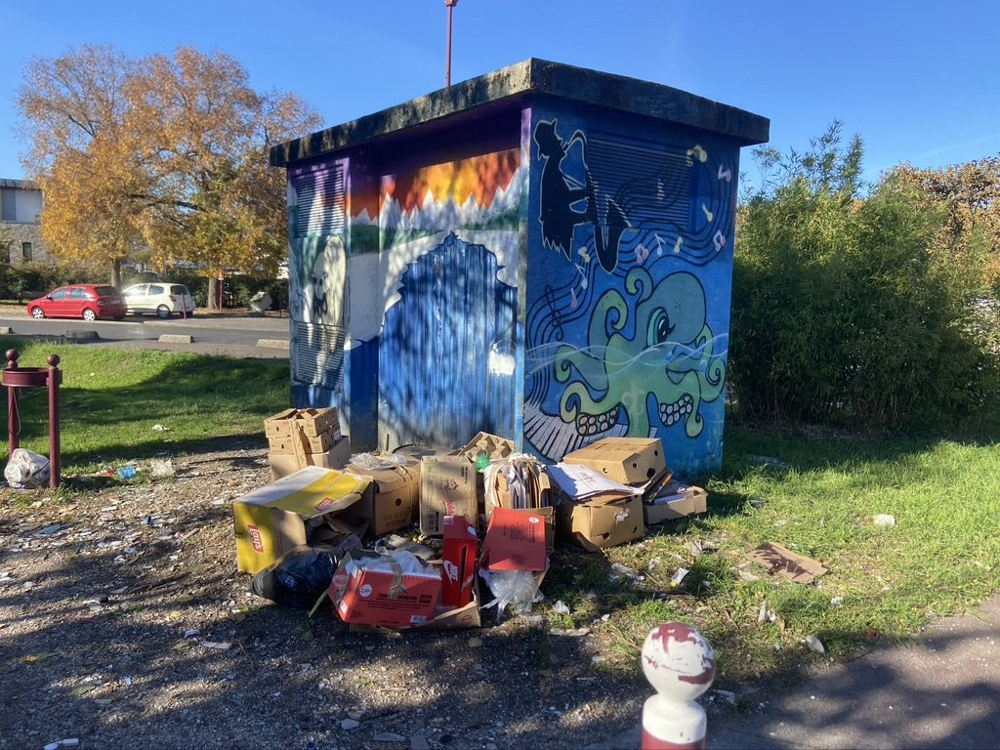
Un cadre agréable, des espaces verts, des lieux de vie… et pourtant, quelques comportements irresponsables suffisent à dégrader ce que nous avons de plus précieux.
Cette photo en est une triste illustration : des cartons, des emballages et des déchets abandonnés au pied d’un local, au milieu d’un espace qui mérite pourtant d’être respecté.
La propreté de notre ville ne repose pas uniquement sur le travail des agents municipaux. Elle dépend aussi du comportement de chacun d’entre nous. Jeter ses déchets n’importe où, c’est manquer de respect aux habitants, à l’environnement et à celles et ceux qui s’investissent chaque jour pour rendre notre cadre de vie plus agréable.
Le respect de la ville commence par le respect de tous. Ce n’est pas seulement une question de propreté, c’est aussi une question d’éducation, de civisme et de responsabilité collective.
Bondy appartient à tous ses habitants. Alors, préservons ses espaces, utilisons les lieux de collecte adaptés et apprenons à nos enfants l’importance de respecter les espaces communs.
Une ville propre est l’affaire de tous. Ne laissons pas l’incivilité gâcher ce que nous avons la chance de partager.